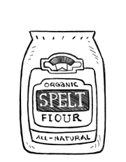

spelt flour
Spelt flour, or Triticum aestivum is an ancient grain, with a different genus than wheat. Spelt is reddish in color, and has a nutty, somewhat sweet and mild taste. Spelt is a wholegrain, rich in iron, zinc, protein and calcium.
It is considered a light grain, meaning it won't weight down baked goods like whole wheat flour does. It is also much easier to digest than wheat. The gluten in spelt is more fragile, it breaks down more easily and so it's important to not knead too vigorously (that will result in a crumbly texture). Less gluten also means it won't rise as well, so a starter may be necessary, that, or more baking powder or yeast. (ref)
Weight: 1 cup | 3 1/2 oz | 99 g
flour
Flour is a powder made by grinding raw grains, roots, beans, nuts, or seeds. It is used to make many different foods. Cereal flour is the main ingredient of bread, which is a staple food for most cultures. Wheat is the most common base for flour, as is corn flour and rye flour. Cereal flour consists either of the endosperm, germ, and bran together (wholegrain wheat flour) or of the endosperm alone (all purpose flour).